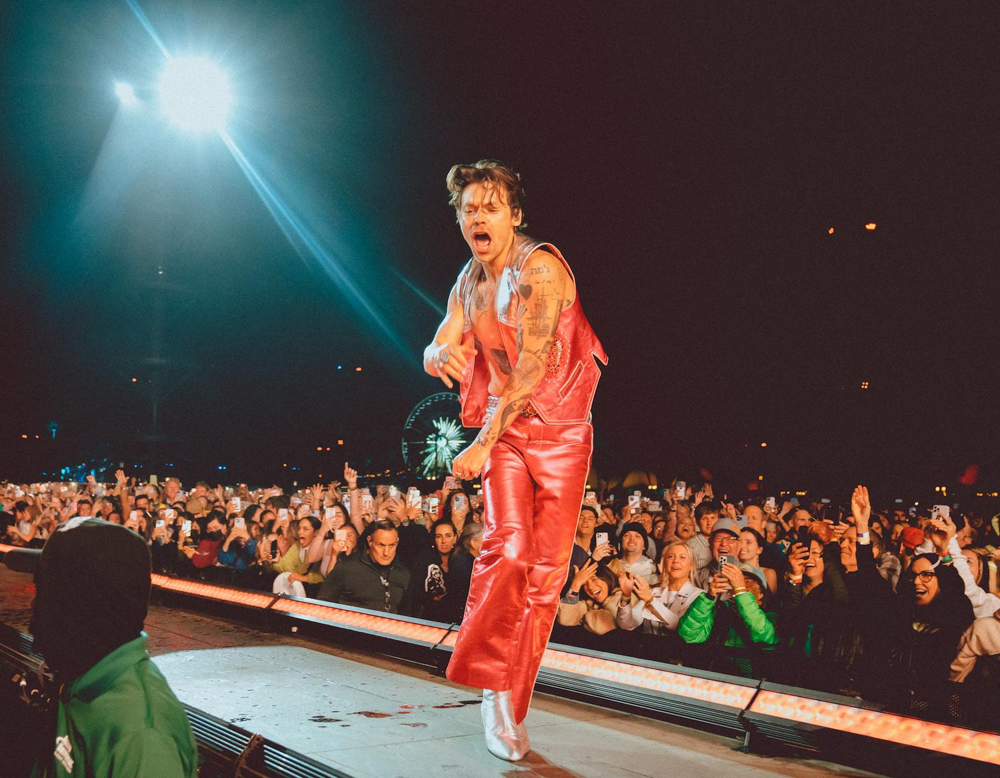

Harry Styles is a musical artist that was born in England. He rose to fame on the British TV show, The X Factor. He auditioned at the age of 16 and was selected to move forward but as part of a group with four other young men, called One Direction. His song choice for the audition was Steve Wonder's, 'Isn't She Lovely'.
Harry has grown to be a globally known artist. His rise to fame began with One Direction followed by his solo career. At the end of 2023, Harry wrapped up a massive 22-month long international tour, earning $600 million in final revenue, where he performed nearly 200 shows.
Harry is now well-known for his music, acting, philanthropy, and as a fashion icon. He is supportive of the LGBTQ+ community and sports gender fluid clothing, which earned him his fashion icon status. His music is known for having messages of love and acceptance.
Harry's Early Life
Harry grew up in the village of Holmes Chapel in Chesire, England. He is very close to his mother, Anne, and sister Gemma. His entire family, including his father, Des, and stepfather, Robin, have supported his dreams. Before auditioning for The X Factor, he enjoyed working at a local bakery and had plans to go to university.
Harry's Music Career
One Direction
The grouped formed on the show with five boys - Harry Styles, Louis Tomlinson, Zayn Malik, Niall Horan, and Liam Payne. After becoming fan favorites on The X Factor, the boys were able to kick off a successful career as a boy band.
The boys stayed together for almost 6 years, releasing five albums and completing four tours. They disbanded for a break in 2015 when Zayn Malik announced his departure from the group. Each member has left room for speculation regarding a reunion of the group.
The end of 2023 saw a massive upturn in speculation regarding the group reforming after some comments made by several members. No confirmation has been made, but fans still hold on to hope as no comment against the rumors has come out.
One Direction Discography
Up All Night (2011)
Take Me Home (2012)
Four (2014)
Midnight Memories (2013)
Made in the A.M. (2015)
Harry's Solo Career

After One Direction disbanded, Harry and other members pursued solo careers. He released his first solo single in 2017, 'Sign of the Times,' which went straight to number one on the charts in England. His solo career was showing a new genre, with more soft rock tracks on his self-titled debut solo album. At the same time of this album, Harry made his acting debut in Christopher Nolan's, Dunkirk.
With the release of his first album, Harry embarked on his first solo tour in 2018 called Live On Tour. This tour encompassed almost 90 dates internationally.
In 2019, Harry's second album, 'Fine Line' came out. This album went on to be ranked 491 in Rolling Stone's 2020 list of 500 Greatest Albums of All Time.
At the start of 2022, Harry announced he would be going on tour entitled Love On Tour. In April, he headlined Coachella on the first Friday and joined Lizzo on stage the second weekend of the festival. He used his performance at Coachella to debut two new songs from his upcoming album. In May, the official release of his third album, 'Harry's House' was eagerly anticipated. Come August, Harry announced an extension of his tour. His tour added to his fame as fans took to social media to share special moments from engagements, gender reveals, and other special announcements the singer facilitated during his concerts. During this tour, Harry sold out Madison Square Garden with a run of 15 shows.The tour concluded in Italy in 2023, making it one of the largest tours ever.
Harry Styles' Discography
Harry Styles (2017)
Fine Line (2019)
Harry's House (2022)
Harry's Top Hits
Watermelon Sugar
Golden
Lights Up
Falling
As It Was
Satellite
Adore You
Cherry
Sweet Creature
Awards
2023
Grammy Award for Album of the Year - Harry's House
Grammy Award for Best Pop Vocal Album - Harry's House
Brit Award for British Album of the Year - Harry's House
Brit Award for Song of the Year - As It Was
Juno Award for International Album of the Year - Harry's House
Kids' Choice Award for Favorite Song - As It Was
Kids' Choice Award for Favorite Male Artist
Kids' Choice Award for Favorite Global Music Star
Brit Award for Best British Pop/R&B Act
Brit Award for Artist of the Year
EMMA Award for the Most Streamed Foreign Song - As It Was
iHeartRadio Music Award for Favorite Residency - Love On Tour
iHeartRadio Music Award for Artist of the Year
iHeartRadio Music Award for Favorite Tour Style
2022
MTV Video Music Award for Best Pop - As It Was
NRJ Music Award for International Song of the Year - As It Was
MTV Video Music Award for Best Cinematography - As It Was
MTV Video Music Award for Album of the Year - Harry's House
People's Choice Award for Favorite Male Artist
MTV Europe Music Award for Best UK & Ireland Act
American Music Award for Favorite Male Pop/Rock Artist
American Music Award for Favorite Pop Song - As It Was
NRJ Music Award for International Video of the Year - As It Was
ARIA Music Award for Best International Artist
iHeartRadio Music Award for Best Tour - Love On Tour
MTV Europe Music Award for Best Live Act
2021
Grammy Award for Best Pop Solo Performance - Watermelon Sugar
MTV Video Music Award for Choreography - Treat People With Kindness
Brit Award for Song of the Year - Watermelon Sugar
Juno Award for International Album of the Year - Fine Line
iHeartRadio Music Award for Best Lyrucs - Adore You
PRS for Music Most Performed at Work - Adore You
2020 & Previous Years
NME Award for Villian of the Year - 2014, 2013
Teen Choice Award for Choice Male Hottie - 2016, 2013
American Music Award for Favorite Pop/Rock Album - Fine Line, 2020
Brit Award for British Video of the Year - Sign of the Times, 2018
ARIA Music Award for Best Internation Album of the Year - Fine Line, 2020 and Harry Styles, 2017
MTV Europe Music Award for Best Look - 2013
Billboard Music Chart Achievement Award - 2020
Bravo Otto - Superhottie - 2013
iHeartRadio Music Award for Best Music Video - Sign of the Times, 2018
iHeartRadio Music Award for Best Cover Song - 2019, 2018
Teen Choice Award for Choice Rock Artist - 2017
Teen Choice Award for Candie's Choice Style Icon - 2018, 2017
Teen Choice Award for Choice Male Artist - 2017
Teen Choice Award for Choice Summer Tour - Harry Styles: Live on Tour, 2018
Teen Choice Award for Choice Smile - 2014, 2013
People's Choice Award for the Style Star - 2019, 2018
Notable Mentions
Harry has been featured in several films, flexing his acting chops. Films he has been in are listed below, but he makes regular cameo apperances and visits to his good friend, James Corden's tv series, The Late Late Show with James Corden. One episode features James and Harry mulling about New York City to make a music video for Harry's new song with only $300.
My Policeman - 2022
Don't Worry Darling - 2022
Eternals - 2021
Dunkirk - 2017
Another historic moment was when Harry was the first male to appear solo on the cover of Vogue, in a dress. This stirred up quite the talk amongst fans and non-fans; however, Harry's reputation wasn't hindered in the slightest.
With humble beginnings and rocketing to stardom, we can't wait to see what Harry will do next!